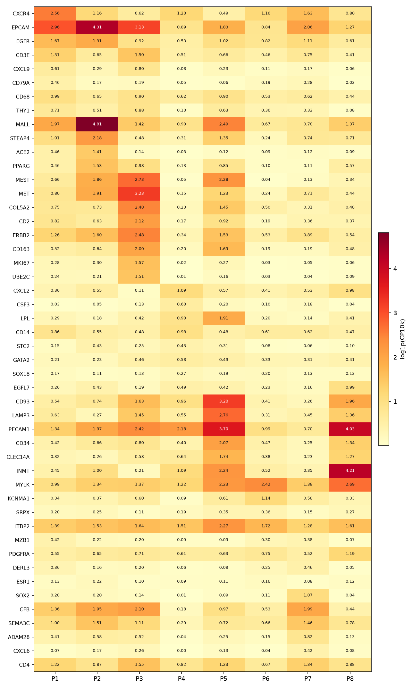
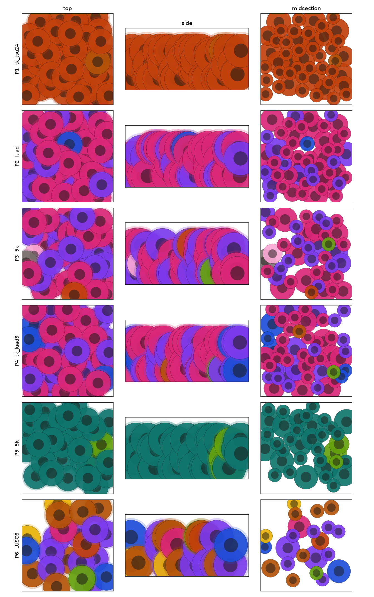
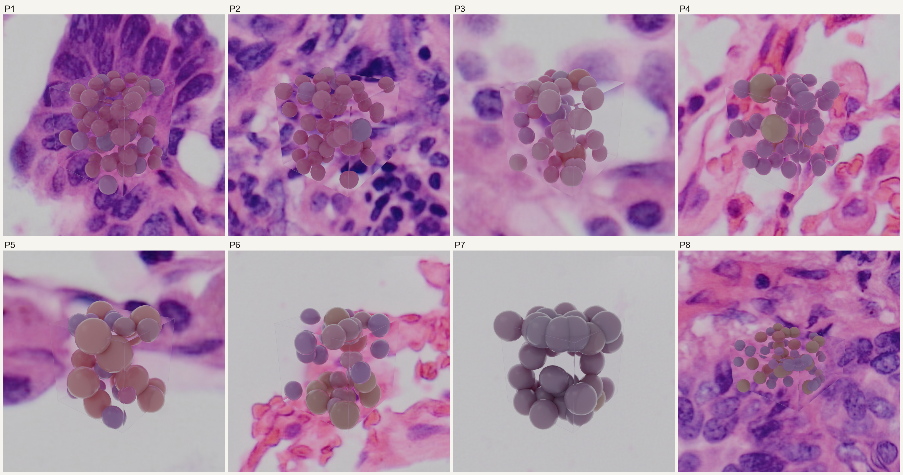
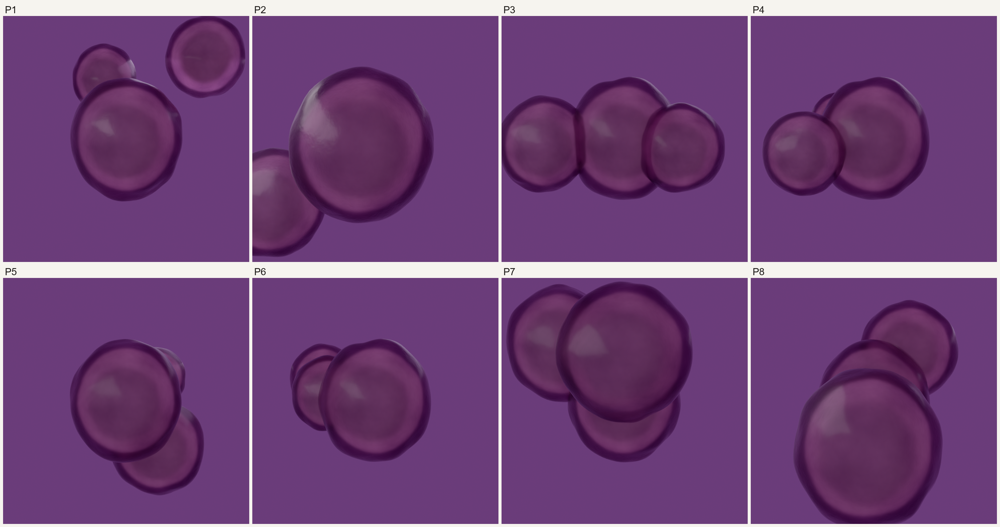
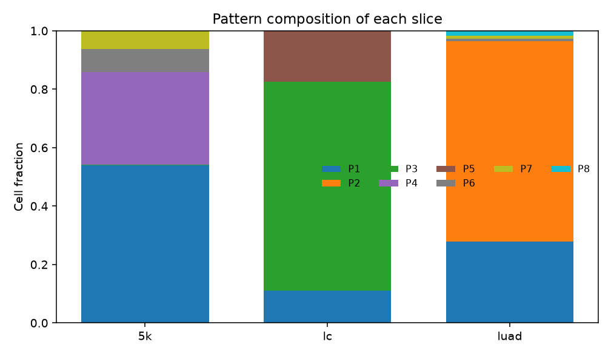

Annotile
把已经标好细胞类型的空间切片划成小窗，把细胞类型、共有基因表达和配准后的 H&E 外观合在一起聚类，得到可以在切片之间比较的组织模式。
输入来自三张公开的人肺 Xenium 切片。细胞类型注释来自 GHIST_input。细胞坐标、H&E 和 cell_feature_matrix.h5 来自对应的 10x Genomics 公开数据。形态学流程参照 Zhang、Liu、Chen 等人在 Genome Medicine 2025 上的 HIPO：先得到一批细簇，再用高斯混合按 BIC 把相似细簇合并成模式，最后看每张切片由哪些模式组成。
HIPO 的细簇特征是 H&E 图块的对比学习向量。这里的小窗同时使用细胞类型比例、三张切片共有基因的表达主成分，以及配准 H&E 的颜色和纹理。细胞注释是比原文多出来的那一维。转录组 Seurat 簇没有放进跨切片的特征里，因为不同实验的簇编号不是同一种细胞状态；它们只在最后用来描述每个模式里混有哪些转录组簇。
数据
- Prime 5K 肺腺癌（5k）
- 免疫组库面板肺癌（lc）
- 多模态分割肺腺癌（luad）
注释表只有细胞编号和类型。坐标按细胞编号拼回去。三张切片的编号匹配率都在下面的表里。随机种子是 42。
1. 留下可用的细胞注释
注释说明里，low_feat_cell、mph_CXCL9_region、fib?，以及 CCL19 混合群（表中的 lymph_endo?CCL19）被标成混合或不采用。带问号、又不在保留名单里的标签也去掉。说明明确写了对照图像后保留的 epi? 和 endo? 留在分析里。fib_SYNPO2 按原表保留，说明里把它进一步看成血管平滑肌。
保留下来的类型：AT1、AT2_like、Tfh_CXCL13_region、b、cil、endo、endo?、epi、epi?、fib、fib_SYNPO2、fib_activated、lymph_endo、mast、mph、nkt、normal_epi、plasma。
| 切片 | 注释细胞 | 坐标匹配 | 过滤后 | 进入小窗 | 小窗以外 | 去掉的标签 |
|---|---|---|---|---|---|---|
| 5k | 278,146 | 100.0% | 253,699 | 253,512 | 187 | low_feat_cell 9048，lymph_endo?CCL19 9035，mph_CXCL9_region 5140，epi?GRP 1224 |
| lc | 160,448 | 100.0% | 147,889 | 147,759 | 130 | low_feat_cell 7892，fib? 4667 |
| luad | 161,894 | 100.0% | 161,894 | 161,742 | 152 | 无 |
2. 把切片切成小窗
每个细胞按质心落入边长 400 µm 的方格。少于 30 个细胞的方格去掉，相当于原文里丢掉组织太少的图块。三张切片一共 785 个小窗。相邻小窗属于同一模式的比例是 83.6%，用来看这些模式在组织里是成片的还是散点。
3. 小窗特征
每个小窗先算细胞类型比例。三张切片再对上表达矩阵里共有的 153 个基因，取每个细胞的 log1p 标准化表达，在窗内平均后做主成分，这次保留 16 个成分。H&E 用配准矩阵裁出同一小窗，加入平均颜色、颜色波动和纹理。这三块各自标准化后拼在一起做聚类。
表达矩阵和注释细胞编号的匹配率：5k 100.0%，lc 100.0%，luad 100.0%。
4. 细簇
对全部小窗做 k-means。k 从 6 试到 20。每次在固定的 4000 个小窗（不足则全部）上计算轮廓系数，只有比当前选择高出 0.01 才换成更大的 k。选中的细簇数是 10。
k=6 → 0.198, k=8 → 0.220, k=10 → 0.238, k=12 → 0.245, k=14 → 0.247, k=16 → 0.225, k=18 → 0.237, k=20 → 0.237

5. 合并成模式
每个细簇取成员小窗的平均组成。对这些平均向量做标准化，再用对角协方差的高斯混合去拟合。组数从 2 试到细簇数减 1，并且不超过 8，取得分最低的 BIC。选中 8 个模式，按包含细胞数从多到少称为 P1、P2……。细簇之间的相关矩阵只用来展示哪些细簇被放在一起，不作为混合模型的输入：相关矩阵的行数和列数相同，满协方差估不稳。
G=2 → 1076, G=3 → 888, G=4 → 777, G=5 → 654, G=6 → 526, G=7 → 372, G=8 → 225
BIC 一直降到搜索上限。上限由细簇个数决定，所以这次合并很少：多数细簇各自留成一个模式。


| 模式 | 包含的细簇 | 小窗 | 细胞 | 主要细胞类型 |
|---|---|---|---|---|
| P1 | F2 F7 F8 | 227 | 198,468 | epi 32.7%、nkt 18.7% |
| P2 | F3 | 95 | 111,092 | epi 58.8% |
| P3 | F1 | 122 | 105,605 | epi 21.9%、nkt 18.4%、mph 15.4% |
| P4 | F0 | 185 | 80,623 | endo 34.5%、fib 17.6% |
| P5 | F5 | 79 | 25,777 | endo 40.3%、epi? 26.8% |
| P6 | F4 | 47 | 21,498 | fib_SYNPO2 30.0%、fib 21.1% |
| P7 | F6 | 19 | 17,226 | cil 42.4% |
| P8 | F9 | 11 | 2,724 | endo 41.5%、fib 25.8% |

每个模式的细胞组成
下表是该模式里各细胞类型占该模式细胞数的比例。任一模式都不到 2% 的类型没有列出。
| 细胞类型 | P1 | P2 | P3 | P4 | P5 | P6 | P7 | P8 |
|---|---|---|---|---|---|---|---|---|
| AT1 | 0.2% | 0.0% | 0.0% | 10.9% | 0.0% | 0.8% | 0.3% | 0.0% |
| AT2_like | 0.6% | 0.0% | 0.0% | 8.9% | 0.0% | 1.7% | 0.8% | 0.0% |
| Tfh_CXCL13_region | 0.2% | 0.0% | 3.0% | 0.0% | 0.4% | 0.0% | 0.0% | 0.0% |
| b | 5.5% | 0.9% | 3.6% | 0.2% | 1.2% | 0.8% | 1.6% | 0.1% |
| cil | 1.3% | 0.1% | 0.0% | 0.3% | 0.0% | 3.7% | 42.4% | 0.0% |
| endo | 5.9% | 4.0% | 1.3% | 34.5% | 40.3% | 12.6% | 5.9% | 41.5% |
| endo? | 0.3% | 0.0% | 6.2% | 0.0% | 0.9% | 0.0% | 0.0% | 0.0% |
| epi | 32.7% | 58.8% | 21.9% | 1.3% | 0.3% | 6.5% | 3.6% | 2.3% |
| epi? | 1.4% | 0.0% | 10.7% | 0.0% | 26.8% | 0.0% | 0.0% | 0.0% |
| fib | 7.8% | 12.9% | 7.9% | 17.6% | 0.4% | 21.1% | 9.6% | 25.8% |
| fib_SYNPO2 | 4.1% | 0.0% | 0.0% | 4.9% | 0.0% | 30.0% | 9.3% | 0.0% |
| fib_activated | 4.0% | 0.0% | 0.0% | 0.2% | 0.0% | 1.2% | 1.8% | 0.0% |
| mast | 1.1% | 1.1% | 0.7% | 1.6% | 1.8% | 3.1% | 3.2% | 1.9% |
| mph | 11.0% | 9.5% | 15.4% | 8.9% | 14.4% | 7.2% | 6.3% | 9.3% |
| nkt | 18.7% | 11.0% | 18.4% | 9.9% | 8.9% | 7.3% | 10.4% | 9.5% |
| normal_epi | 0.0% | 0.1% | 0.0% | 0.0% | 0.0% | 0.0% | 0.0% | 9.1% |
| plasma | 5.2% | 1.8% | 10.0% | 1.0% | 2.9% | 4.0% | 4.7% | 0.4% |
每个模式的基因表达
表达矩阵参加了聚类：三张切片共有的 153 个基因先在每个细胞里做成 log1p(CP10k)，再在小窗内平均，取 16 个主成分，和细胞组成、H&E 一起使用。下表是每个模式相对其他模式升高最多的 8 个基因，数值是按细胞数加权的平均 log1p(CP10k)。热图把这些基因在全部模式里的同一套数值放在一起。
| 模式 | 升高的基因和表达值 |
|---|---|
| P1 | CXCR4 2.56、EPCAM 2.96、EGFR 1.67、CD3E 1.31、CXCL9 0.61、CD79A 0.46、CD68 0.99、THY1 0.71 |
| P2 | MALL 4.81、EPCAM 4.32、STEAP4 2.18、ACE2 1.42、PPARG 1.52、MEST 1.86、EGFR 1.91、MET 1.91 |
| P3 | MET 3.23、MEST 2.73、COL5A2 2.48、CD2 2.12、ERBB2 2.48、CD163 2.00、MKI67 1.57、UBE2C 1.51 |
| P4 | CXCL2 1.09、CSF3 0.60、LPL 0.90、CD14 0.98、STC2 0.43、GATA2 0.58、SOX18 0.27、EGFL7 0.49 |
| P5 | CD93 3.20、LAMP3 2.76、PECAM1 3.70、LPL 1.91、CD34 2.07、MEST 2.28、CLEC14A 1.74、INMT 2.24 |
| P6 | MYLK 2.42、KCNMA1 1.14、SRPX 0.36、LTBP2 1.72、MZB1 0.30、PDGFRA 0.75、DERL3 0.25、ESR1 0.16 |
| P7 | SOX2 1.06、CFB 1.99、SEMA3C 1.46、ADAM28 0.82、CXCR4 1.64、CXCL6 0.42、CD4 1.33、DERL3 0.46 |
| P8 | INMT 4.21、PECAM1 4.03、MYLK 2.69、CD93 1.96、CLEC14A 1.27、EGFL7 0.99、CD34 1.34、PDGFRA 1.19 |
| 基因 | P1 | P2 | P3 | P4 | P5 | P6 | P7 | P8 |
|---|---|---|---|---|---|---|---|---|
| CXCR4 | 2.56 | 1.16 | 0.62 | 1.20 | 0.49 | 1.16 | 1.64 | 0.80 |
| EPCAM | 2.96 | 4.32 | 3.13 | 0.89 | 1.83 | 0.84 | 2.06 | 1.27 |
| EGFR | 1.67 | 1.91 | 0.92 | 0.53 | 1.02 | 0.82 | 1.11 | 0.61 |
| CD3E | 1.31 | 0.65 | 1.50 | 0.51 | 0.66 | 0.46 | 0.75 | 0.41 |
| CXCL9 | 0.61 | 0.29 | 0.80 | 0.08 | 0.23 | 0.11 | 0.17 | 0.07 |
| CD79A | 0.46 | 0.17 | 0.19 | 0.05 | 0.07 | 0.19 | 0.28 | 0.03 |
| CD68 | 0.99 | 0.65 | 0.90 | 0.62 | 0.90 | 0.53 | 0.62 | 0.44 |
| THY1 | 0.71 | 0.51 | 0.88 | 0.10 | 0.63 | 0.36 | 0.33 | 0.08 |
| MALL | 1.97 | 4.81 | 1.42 | 0.90 | 2.49 | 0.67 | 0.78 | 1.37 |
| STEAP4 | 1.01 | 2.18 | 0.48 | 0.31 | 1.35 | 0.24 | 0.74 | 0.71 |
| ACE2 | 0.46 | 1.42 | 0.14 | 0.03 | 0.12 | 0.09 | 0.12 | 0.09 |
| PPARG | 0.46 | 1.52 | 0.98 | 0.13 | 0.85 | 0.10 | 0.11 | 0.57 |
| MEST | 0.66 | 1.86 | 2.73 | 0.05 | 2.28 | 0.04 | 0.13 | 0.34 |
| MET | 0.80 | 1.91 | 3.23 | 0.15 | 1.23 | 0.24 | 0.71 | 0.44 |
| COL5A2 | 0.75 | 0.73 | 2.48 | 0.23 | 1.45 | 0.49 | 0.31 | 0.48 |
| CD2 | 0.82 | 0.63 | 2.12 | 0.17 | 0.93 | 0.19 | 0.36 | 0.37 |
| ERBB2 | 1.26 | 1.60 | 2.48 | 0.34 | 1.53 | 0.53 | 0.89 | 0.54 |
| CD163 | 0.52 | 0.64 | 2.00 | 0.20 | 1.69 | 0.19 | 0.19 | 0.48 |
| MKI67 | 0.28 | 0.30 | 1.57 | 0.02 | 0.28 | 0.03 | 0.06 | 0.06 |
| UBE2C | 0.24 | 0.21 | 1.51 | 0.01 | 0.16 | 0.03 | 0.04 | 0.09 |
| CXCL2 | 0.36 | 0.55 | 0.11 | 1.09 | 0.57 | 0.41 | 0.53 | 0.98 |
| CSF3 | 0.03 | 0.05 | 0.13 | 0.60 | 0.20 | 0.10 | 0.18 | 0.04 |
| LPL | 0.29 | 0.18 | 0.42 | 0.90 | 1.91 | 0.20 | 0.14 | 0.41 |
| CD14 | 0.86 | 0.55 | 0.48 | 0.98 | 0.48 | 0.61 | 0.62 | 0.47 |
| STC2 | 0.15 | 0.43 | 0.25 | 0.43 | 0.31 | 0.08 | 0.06 | 0.10 |
| GATA2 | 0.21 | 0.23 | 0.46 | 0.58 | 0.49 | 0.33 | 0.31 | 0.41 |
| SOX18 | 0.17 | 0.11 | 0.13 | 0.27 | 0.19 | 0.20 | 0.13 | 0.13 |
| EGFL7 | 0.26 | 0.43 | 0.19 | 0.49 | 0.42 | 0.23 | 0.16 | 0.99 |
| CD93 | 0.54 | 0.74 | 1.63 | 0.96 | 3.20 | 0.41 | 0.26 | 1.96 |
| LAMP3 | 0.62 | 0.27 | 1.45 | 0.55 | 2.76 | 0.31 | 0.45 | 1.36 |
| PECAM1 | 1.34 | 1.97 | 2.42 | 2.18 | 3.70 | 0.99 | 0.70 | 4.03 |
| CD34 | 0.42 | 0.66 | 0.80 | 0.41 | 2.07 | 0.47 | 0.25 | 1.34 |
| CLEC14A | 0.32 | 0.26 | 0.58 | 0.65 | 1.74 | 0.38 | 0.23 | 1.27 |
| INMT | 0.45 | 1.00 | 0.21 | 1.09 | 2.24 | 0.52 | 0.35 | 4.21 |
| MYLK | 0.99 | 1.34 | 1.37 | 1.22 | 2.23 | 2.42 | 1.38 | 2.69 |
| KCNMA1 | 0.34 | 0.37 | 0.60 | 0.09 | 0.61 | 1.14 | 0.58 | 0.33 |
| SRPX | 0.20 | 0.25 | 0.11 | 0.19 | 0.35 | 0.36 | 0.15 | 0.27 |
| LTBP2 | 1.39 | 1.53 | 1.64 | 1.51 | 2.27 | 1.72 | 1.28 | 1.61 |
| MZB1 | 0.42 | 0.22 | 0.20 | 0.09 | 0.09 | 0.30 | 0.38 | 0.07 |
| PDGFRA | 0.55 | 0.65 | 0.71 | 0.61 | 0.63 | 0.75 | 0.52 | 1.19 |
| DERL3 | 0.36 | 0.16 | 0.20 | 0.06 | 0.08 | 0.25 | 0.46 | 0.05 |
| ESR1 | 0.13 | 0.22 | 0.10 | 0.09 | 0.11 | 0.16 | 0.07 | 0.12 |
| SOX2 | 0.20 | 0.20 | 0.14 | 0.01 | 0.09 | 0.11 | 1.06 | 0.04 |
| CFB | 1.36 | 1.95 | 2.10 | 0.18 | 0.97 | 0.53 | 1.99 | 0.44 |
| SEMA3C | 1.00 | 1.51 | 1.11 | 0.29 | 0.72 | 0.66 | 1.46 | 0.78 |
| ADAM28 | 0.41 | 0.58 | 0.52 | 0.04 | 0.25 | 0.15 | 0.82 | 0.13 |
| CXCL6 | 0.07 | 0.17 | 0.26 | 0.01 | 0.13 | 0.04 | 0.42 | 0.08 |
| CD4 | 1.22 | 0.87 | 1.55 | 0.82 | 1.24 | 0.67 | 1.33 | 0.88 |

每个模式的样子
版式对应原文图 2。A 的每个点是一个小窗，t-SNE 用的是注释、表达和 H&E 拼在一起的特征，颜色是细簇。B 是这些特征的细簇相关矩阵，只保留下三角。C 的每一格是该模式的一张代表性 H&E 小窗，边框颜色和 B 的模式色一致。


每个模式的三维模型
平面位置用的是这个模式里细胞最密的一块组织上的 Xenium 质心。细胞半径按类型给定。细胞中心只能落在 10 µm 厚的切片里，球与球不能互相穿透，这是 CellSqueeze3D 那类物理约束。每个球分成膜、细胞质和核，对应 Alon、Yu、Zhou 用来合成三维细胞的三个部分。下图从左到右是俯视、侧面和切过切片中平面的截面。侧面里灰色带是切片的厚度，细胞可以凸出切片，因为切片切过的是更大的细胞。
| 模式 | 切片 | 细簇 | 小块边长 | 细胞 |
|---|---|---|---|---|
| P1 | luad | F8 | 40 µm | 54 |
| P2 | luad | F3 | 40 µm | 49 |
| P3 | lc | F1 | 40 µm | 35 |
| P4 | 5k | F0 | 40 µm | 37 |
| P5 | lc | F5 | 40 µm | 26 |
| P6 | 5k | F4 | 40 µm | 29 |
| P7 | 5k | F6 | 40 µm | 36 |
| P8 | luad | F9 | 80 µm | 45 |

旋转查看这八个模型。那里把深度放大了 4 倍，否则 10 µm 的厚度贴在几十微米宽的组织上几乎是一条线。球的半径没有被放大。
下面两张是用 Blender Cycles 渲染的同一批细胞。玻璃盒后面是这块组织自己的 H&E。深度放大了 4 倍，半径仍是按细胞类型给定的微米。

近景是把玻璃盒里的球放大。每一格是该模式这块组织里半径最大的一颗细胞，再加上离它最近的两颗。位置是 Xenium 质心，大小是按细胞类型给定的半径。外层是半透明的膜，里面是细胞质和核，颜色收成紫红色，用来接近合成细胞图的近景。膜上的起伏是渲染时加上的，不是从 H&E 描出来的细胞边界。

6. 每张切片的模式组成
一张切片的向量是各个模式所占的细胞比例。下表是这次运行的结果。三张切片来自三个公开实验、各一个供体，切片之间的相关只能描述这三张片子，不能当成患者分型。
| 切片 | P1 | P2 | P3 | P4 | P5 | P6 | P7 | P8 |
|---|---|---|---|---|---|---|---|---|
| 5k | 54.0% | 0.0% | 0.0% | 31.8% | 0.0% | 8.0% | 6.2% | 0.0% |
| lc | 11.1% | 0.0% | 71.4% | 0.0% | 17.4% | 0.0% | 0.0% | 0.0% |
| luad | 27.8% | 68.7% | 0.0% | 0.0% | 0.0% | 0.8% | 1.0% | 1.7% |

切片之间的 Pearson 相关：
| 切片 | 5k | lc | luad |
|---|---|---|---|
| 5k | 1.00 | -0.19 | 0.08 |
| lc | -0.19 | 1.00 | -0.22 |
| luad | 0.08 | -0.22 | 1.00 |


7. 模式里的转录组簇
Seurat 分辨率 0.3 的簇编号只在各自分片内部有意义。下表是每个模式里细胞数最多的三个转录组簇。
| 切片 | 模式 | 细胞 | 主要转录组簇 |
|---|---|---|---|
| 5k | P1 | 137,030 | 簇 1 22.8%，簇 0 18.3%，簇 4 11.0% |
| 5k | P3 | 54 | 簇 4 57.4%，簇 1 20.4%，簇 6 9.3% |
| 5k | P4 | 80,623 | 簇 2 33.9%，簇 3 17.6%，簇 9 10.9% |
| 5k | P6 | 20,201 | 簇 5 31.9%，簇 3 17.3%，簇 0 7.6% |
| 5k | P7 | 15,604 | 簇 8 43.1%，簇 5 10.3%，簇 0 10.1% |
| lc | P1 | 16,431 | 簇 0 30.9%，簇 1 17.8%，簇 2 14.0% |
| lc | P3 | 105,551 | 簇 0 21.9%，簇 1 18.4%，簇 2 15.4% |
| lc | P5 | 25,777 | 簇 3 40.3%，簇 5 23.7%，簇 2 14.4% |
| luad | P1 | 45,007 | 簇 0 20.4%，簇 2 20.0%，簇 1 12.0% |
| luad | P2 | 111,092 | 簇 1 23.1%，簇 0 22.1%，簇 4 12.7% |
| luad | P6 | 1,297 | 簇 9 56.6%，簇 3 23.3%，簇 6 9.0% |
| luad | P7 | 1,622 | 簇 12 36.3%，簇 2 13.6%，簇 3 11.6% |
| luad | P8 | 2,724 | 簇 6 41.5%，簇 3 22.8%，簇 2 9.5% |
复现
在放有 data/GHIST_input 和三份 data/centroids/*.csv.gz 的目录运行：
python -m annotile run --root . --out results
python -m annotile report --result results/summary.json --docs docs
页面上的数字和 results/summary.json 是同一次运行写出来的。